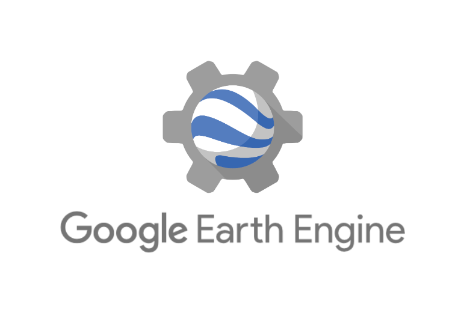

Google Earth Engine (GEE) stands at the cutting edge of geospatial analysis and remote sensing, marking a revolutionary advancement in how we access and utilize Earth observation data. Developed by Google, GEE provides an unparalleled platform for large-scale environmental data analysis, offering vast archives of satellite imagery and geospatial datasets alongside powerful cloud-based computational capabilities.
This advanced platform enables users to analyze and visualize vast amounts of geospatial data with ease, all within an intuitive code-based interface. Its seamless integration with Google's cloud infrastructure allows for real-time data processing, facilitating faster and more efficient decision-making in various fields, from environmental monitoring to disaster management. Collaboration and data sharing become straightforward, empowering teams to work together on critical issues with greater efficiency.
After mastering various GIS tools, I've embarked on a journey of learning Google Earth Engine, exploring how it's redefining spatial data analysis through its unparalleled ability to handle large datasets, perform complex computations, and produce high-quality visualizations, all in a web-based environment. This next-generation tool is reshaping how we approach geospatial analysis, making large-scale data processing more accessible and dynamic than ever before.
ArcGIS Pro stands at the forefront of Geographic Information System (GIS) technology, representing a significant leap forward in spatial analysis and mapping capabilities. Developed by Esri, it redefines how professionals approach geospatial data management, visualization, and analysis.
This next-generation GIS software boasts a user-friendly interface, providing an intuitive and dynamic platform for users to create, edit, analyze, and visualize their data. Its seamless integration with ArcGIS Online facilitates easy collaboration and data sharing, enhancing teamwork and real-time decision-making.
After years of proficiency in ArcGIS Desktop, I've embarked on a new journey of learning ArcGIS Pro. This advanced Geographical Information System (GIS) software is redefining the way we approach spatial data analysis and visualization.

SNAP is an essential, open-source desktop software application developed by the European Space Agency (ESA) for processing, analyzing, and visualizing Earth Observation data. It serves as an specialized framework for handling massive data products from the Sentinel satellite constellations. I utilize SNAP extensively for advanced radar and optical processing workflows, leveraging its powerful toolboxes to handle geometric corrections, radiometric calibrations, and spectral manipulations.
My primary expertise within SNAP includes processing Sentinel-1 Synthetic Aperture Radar (SAR) data to conduct precise terrain metrics, land subsidence monitoring, and crustal displacement analysis. By applying interferometric (InSAR) pipelines, I extract millimeter-level surface deformations over time, enabling deep insights into tectonic activity, groundwater extraction impacts, and structural hazard vulnerabilities. Its robust batch-processing capabilities and seamless integration with external radar tools make it a critical asset in my advanced geospatial analysis workflow.

TerrSet is an integrated geospatial software system developed by Clark Labs for monitoring and modeling the Earth system. It provides an exceptional suite of tools specifically designed for environmental analysis, climate change assessment, and ecosystem services evaluation. I leverage TerrSet's advanced spatial modeling capabilities to analyze complex environmental trends and understand long-term ecological dynamics.
My primary application of TerrSet involves predictive modeling using the Land Change Modeler (LCM). I utilize historical satellite data to analyze historical spatial transitions, evaluate driving forces of environmental change, and simulate future Land Use/Land Cover (LULC) scenarios. By incorporating Markov Chain analysis and Cellular Automata models within TerrSet, I generate highly accurate future projections that are critical for sustainable urban planning, deforestation monitoring, and proactive environmental management assessments.
ArcGIS Desktop has been a cornerstone of Geographic Information System (GIS) technology, providing a powerful platform for spatial data analysis and mapping. Developed by Esri, it offers a comprehensive suite of tools for geospatial professionals to manage, analyze, and visualize data in ways that drive informed decision-making.
With over 3 years of experience working with ArcGIS Desktop, I have completed numerous projects that range from environmental studies and urban planning to disaster management and resource mapping. Its robust analytical capabilities, combined with extensive data integration and cartographic tools, have allowed me to tackle complex spatial challenges and deliver impactful solutions.
ArcGIS Desktop's ability to handle large datasets, conduct advanced spatial analysis, and create professional-quality maps has made it an indispensable tool in my GIS work. Whether dealing with vector data, raster analysis, or intricate geoprocessing workflows, this platform has continually empowered my projects, shaping them into successful, data-driven outcomes.
This experience with ArcGIS Desktop has been foundational in honing my GIS skills and has laid the groundwork for my exploration into more advanced platforms like ArcGIS Pro and Google Earth Engine.
I first learned QGIS, an open-source GIS platform that provided a solid foundation in geospatial analysis and data management. Its user-friendly interface and powerful capabilities made it an excellent starting point for my GIS journey. However, after gaining a strong grasp of QGIS, I quickly transitioned to ArcGIS, where I found more advanced tools and features that better suited the complexity of my projects. This shift allowed me to expand my skills and dive deeper into professional GIS applications.

Google Earth Pro is a powerful tool for visualizing and analyzing geographic data on a global scale. Offering high-resolution satellite imagery and 3D topography, it allows users to explore the Earth's surface with incredible detail. I've utilized Google Earth Pro for a range of projects, including environmental assessments and urban planning, leveraging its ability to import GIS data, measure areas, and create dynamic visualizations.
Though I started my journey with simpler tools, Google Earth Pro has been essential for quick spatial insights and presenting clear, impactful visualizations. Its ease of use and ability to integrate with other GIS platforms make it a valuable tool in my geospatial toolkit.
Microsoft Office has been an essential suite of productivity tools throughout my professional journey, playing a key role in organizing, analyzing, and presenting data across various projects. From creating comprehensive reports in Word to conducting in-depth data analysis with Excel and delivering impactful presentations via PowerPoint, MS Office has consistently enabled efficient workflow and effective communication.
With Excel, I've mastered functions and data visualization tools to analyze datasets, while Word has been invaluable for drafting detailed documentation. PowerPoint ensures my presentations are clear and visually engaging. Overall, MS Office remains a cornerstone for managing day-to-day tasks and supporting complex geospatial and non-geospatial projects alike.